Giada Vegliante
Bless you!
Bless you! Is a digital archive of sneeze animations. Will be possible through machine learning to navigate and interact through different approach. Using Teachable Machine to recognise images, allows the user to become an active part of the project.
{kind=link}
Object


Disassembled archive
WEB PLATFORM
I choose different icons that can be easly remembered by Google Teachable Machine and teach team by training it through different photographies. In order for the teachable machine to function correctly, need to check several times in html code if the parameters were correctly functional.
This record show how icons works to control “sort, tag, search, shuffle, previous and next “
TAG (tag, sort and search)
By showing the icon for “tag” to the camera, the tag, sorting and search elements appear on the screen and this element can be used.
SHUFFLE
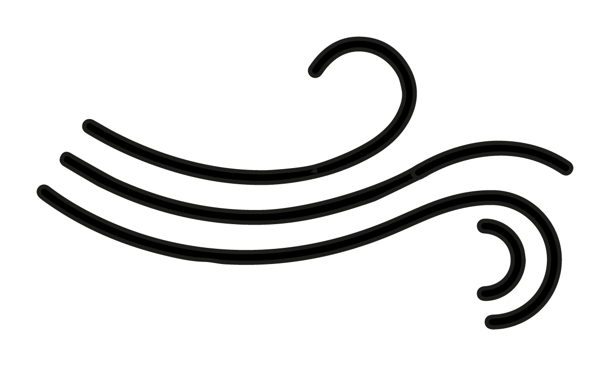By showing the icons for “shuffle” to the camera, the order of the elements changes randomly each time.
PREVIEW
This function does not use the teaching machine, but a coded function called 'click'. Simply click on the desired video to make it appear full screen and enjoy it.
NEXT
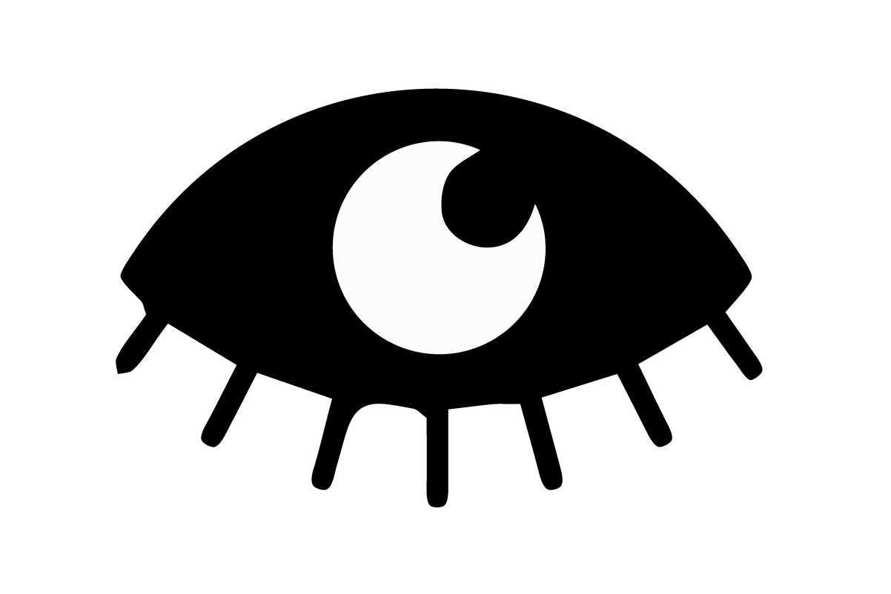By showing the icon for “next” to the camera, the video sequence navigates on to the next.
PREVIOUS
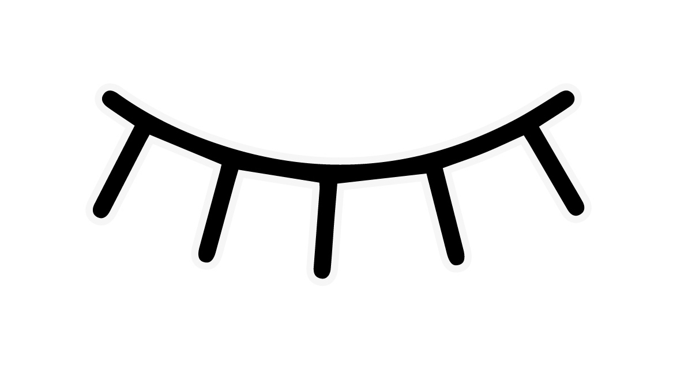
By showing the icon for “previous” to the camera, the video sequence navigates forward.
Download the printable file here.
Teacheble machine
After creating and printing the icons the Google Teachable Machine was trained using the image recognition function, but the first trial did not go well.
I therefore changed the symbols, making them more differentiated and simple, so that the machine recognised them much more easily.
Each icons has approximately 2000 samples in order to make the recognition as accurate as possible.
Button gone wrong
I tried to change the appearance of the buttons by inserting an image, but the button didn't work and and I had to remove it.
Below I have inserted the illustrations I had created for the buttons.
 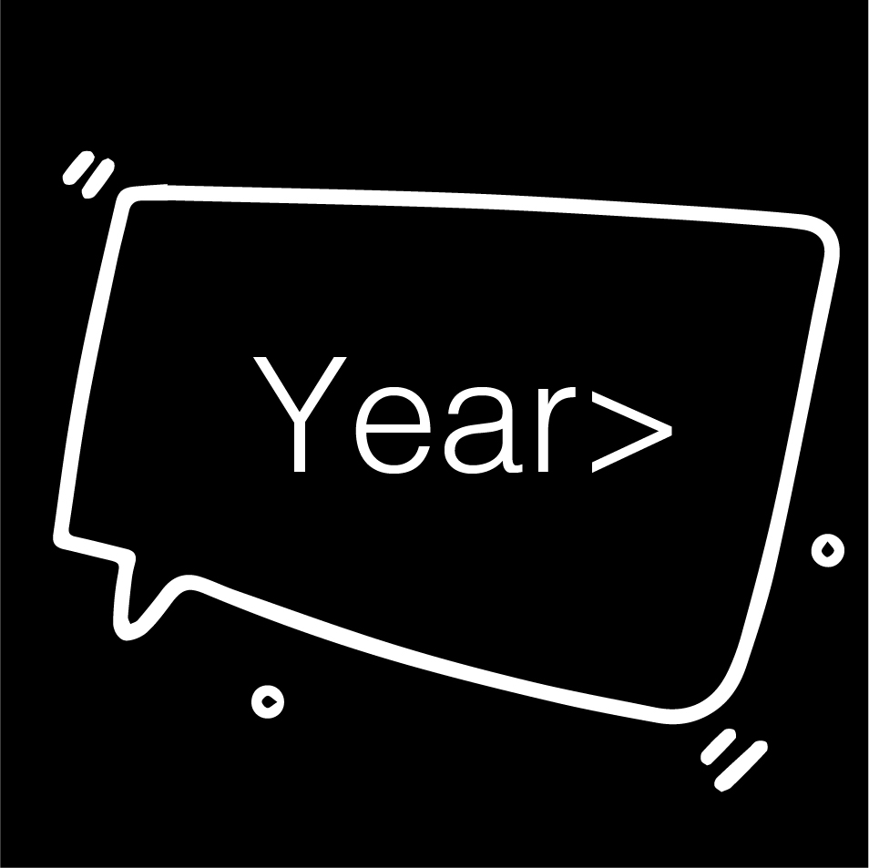
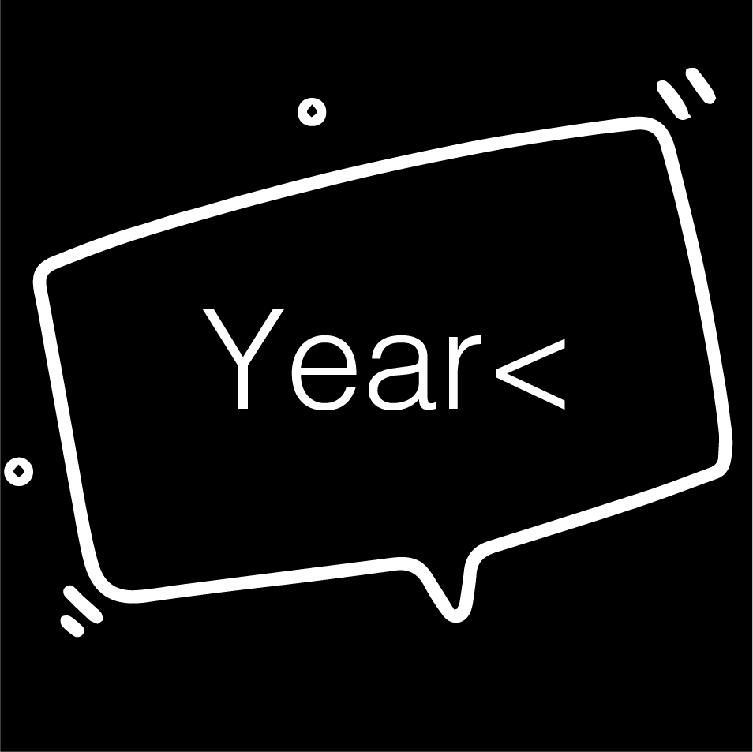
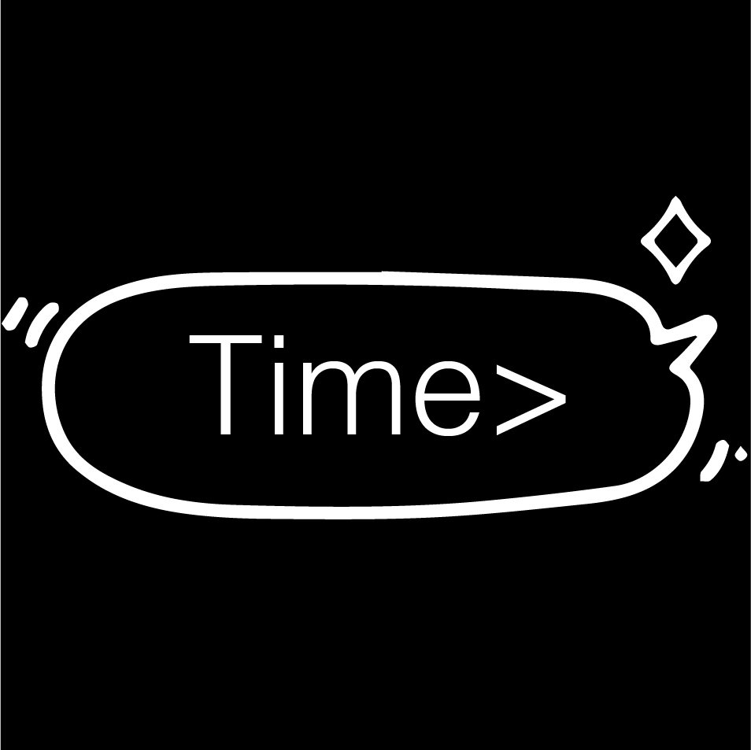
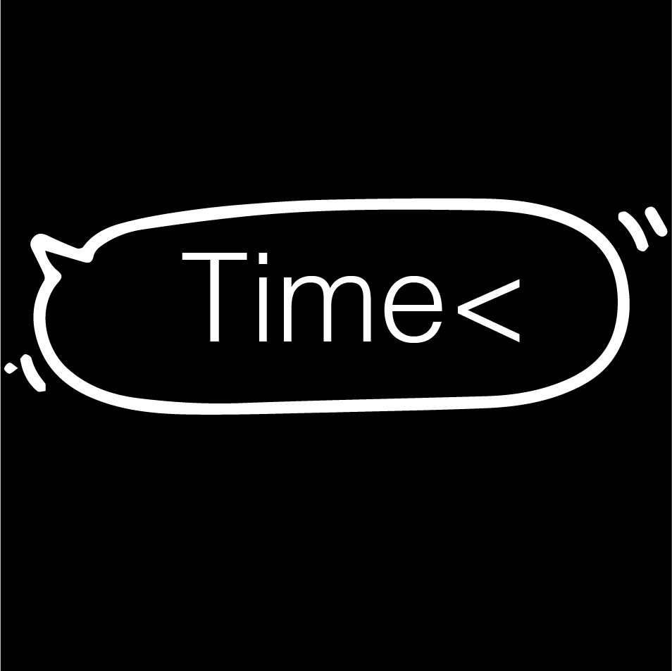
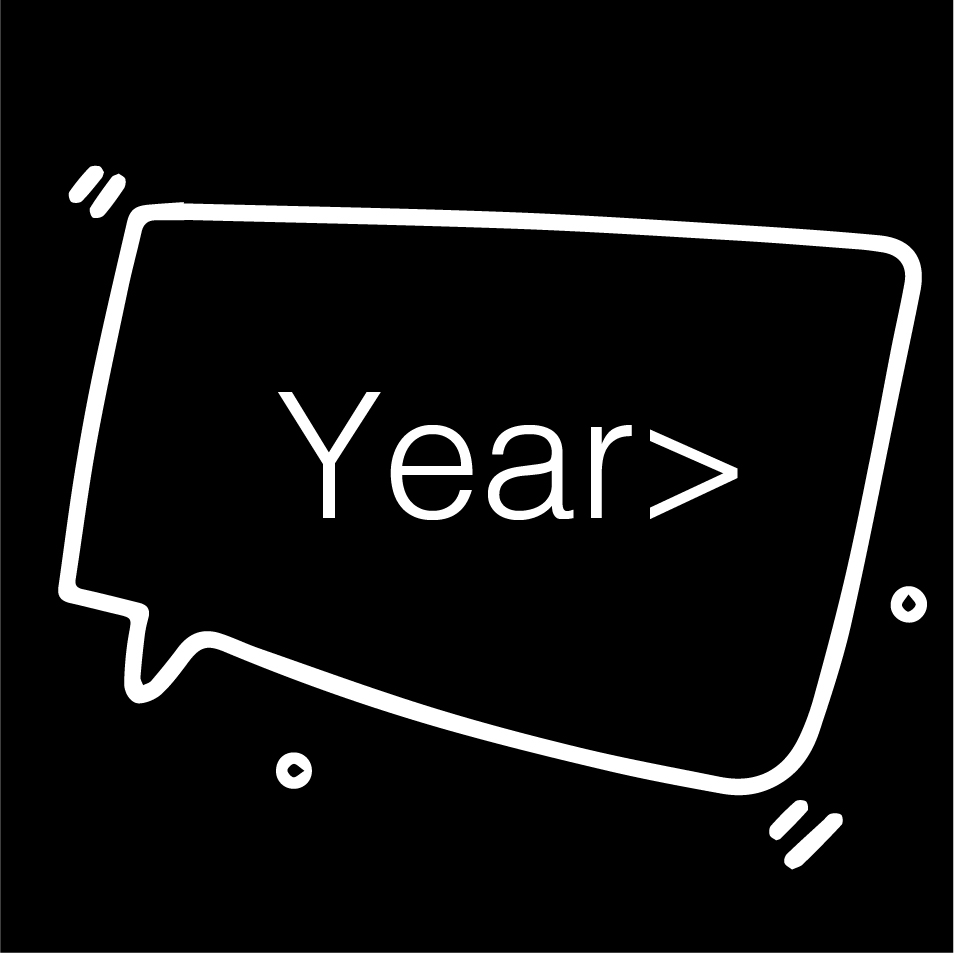
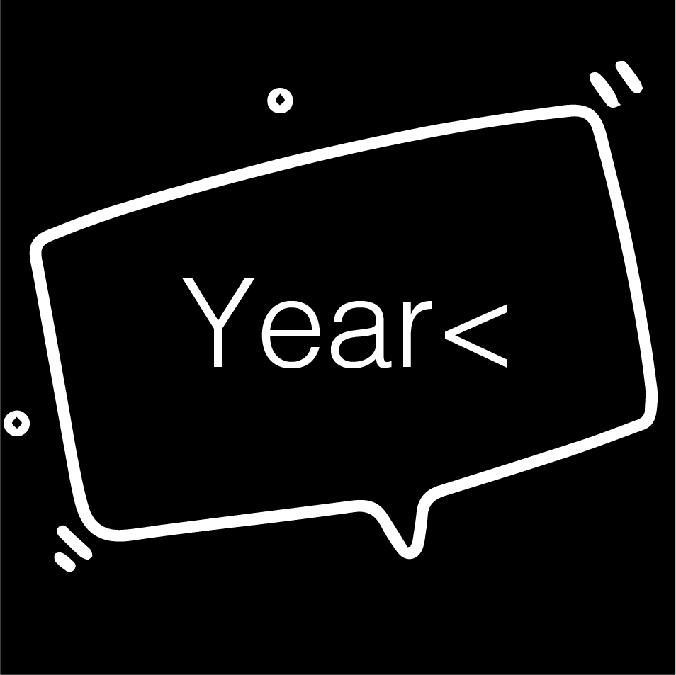
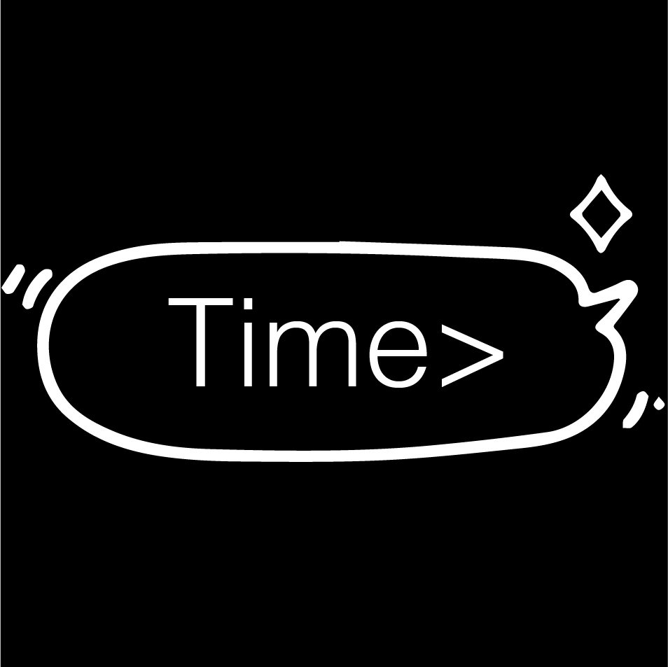
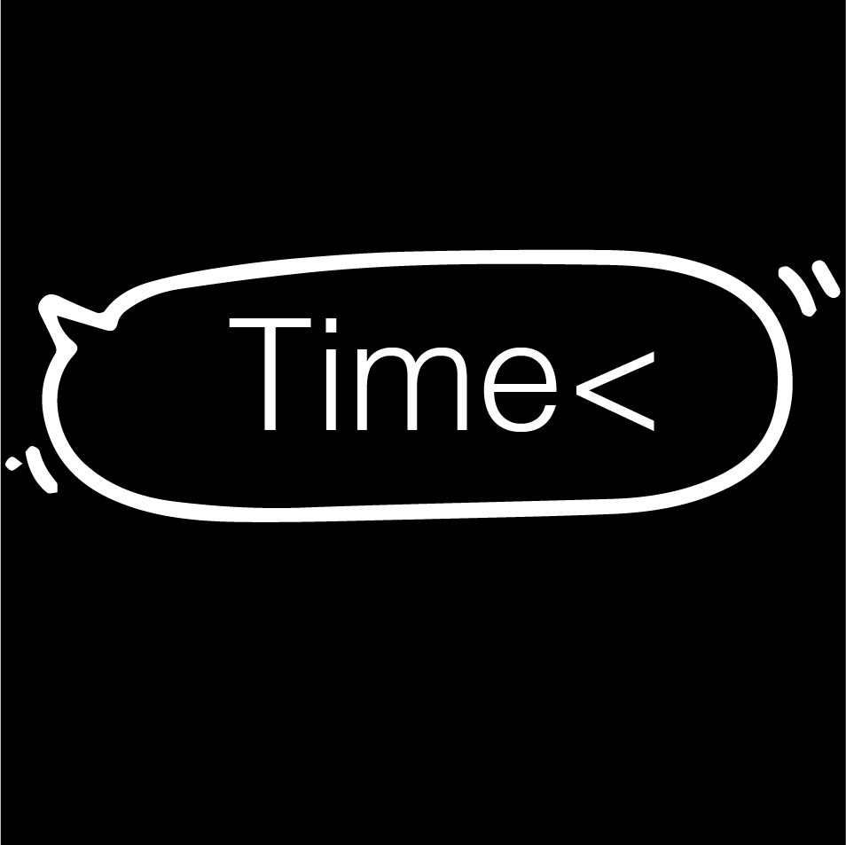